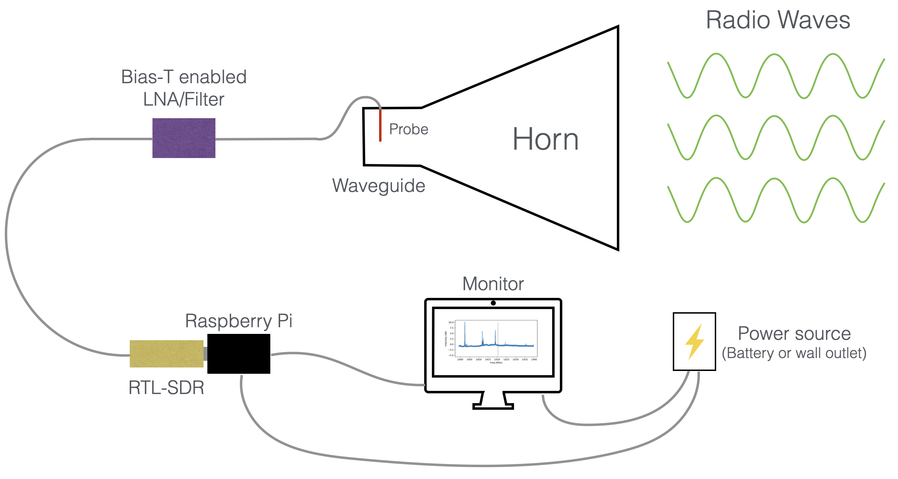
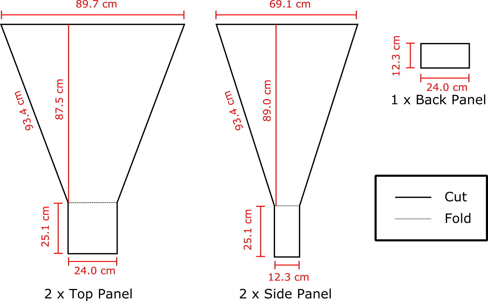
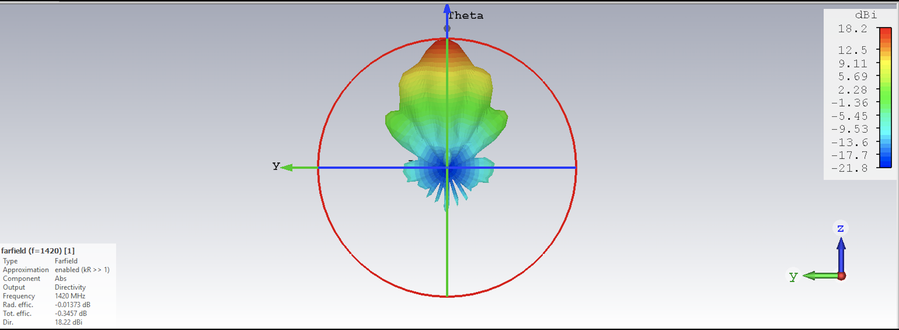
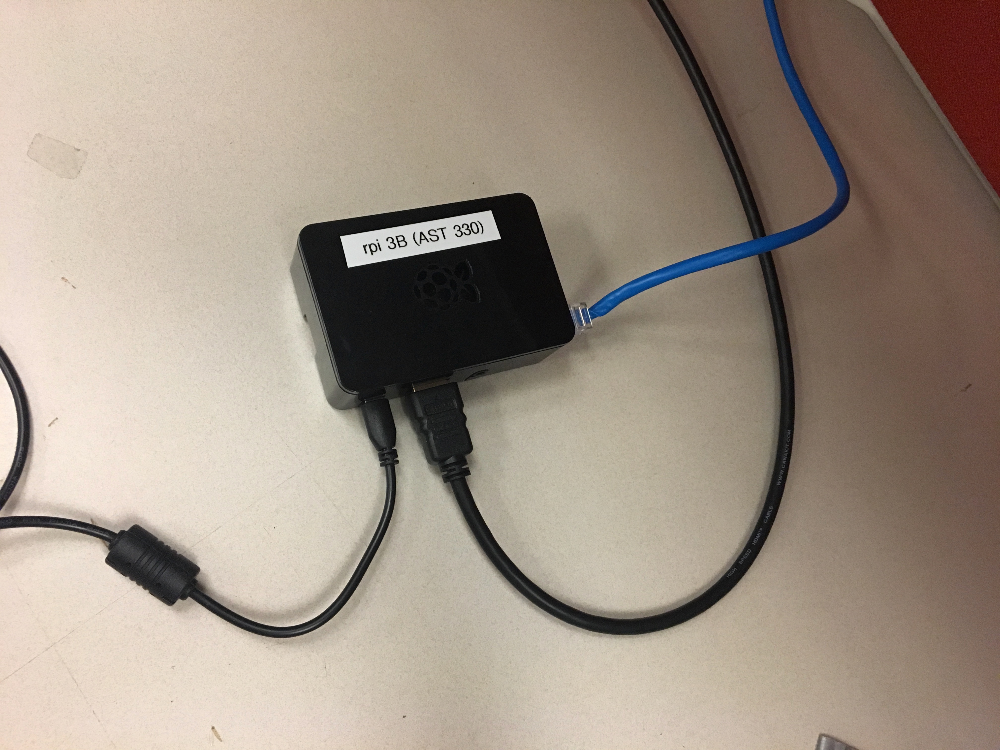

Telescope Construction
A radio telescope has a few key parts. The first is an antenna used to collect the radio waves. For CHART, we use a horn constructed from cardboard and aluminium foil, which collects the radio waves and funnels them to a wire in the base of the horn that acts as the antenna. This turns the radio waves into voltages that travel along the wire and cables, which we can measure with electronics. We then amplify the signal, which makes it louder and easier to detect with our instrument, and filter it with a bandpass filter. The bandpass filter acts as a sort of gate, which allows radio waves at the frequencies we are interested in through, and blocks out any frequencies we don’t want. This is neccesary because sometimes signals from other frequencies, such as FM radio, cell phones, and many other man-made signals can saturate our electronics and drown out the astronomical signals, so we use a filter to filter them out. We then read out these filtered and amplified voltages with a type of radio called a software defined radio (SDR), which just means the radio is primarily implemented in software instead of hardware. The computer connected to the SDR, in this case a Raspberry Pi, records a radio spectrum which must be calibrated and further analyzed. This guide explains the construction and software setup steps. Other pages describe how to observe and reduce your data.
Here is a summary of the beginner CHART setup. 
Horn construction
Materials
- Heavy Duty Cardboard: 90 x 113cm (2 pieces)
- Heavy Duty Cardboard: 70 x 115cm (2 pieces)
- one roll heavy duty aluminum foil
- Aluminum foil tape (aluminum duct tape)
- hot glue
- a pencil
- meter stick
- box cutter
Using the drawing below, cut out the four sides of the horn. Remember, “Measure twice, cut once”! Trace out each horn and double check everything. Warning! Be careful not to damage any lovely old floors. Cut outside or put down something to protect that parquet.

Next, line the cardboard pieces with the aluminum foil. Only cover the sides that will end up on the inside when the horn is assembled. In theory it doesn’t matter which side is covered since cardboard is invisible in the radio, but in practice the foil is fragile.
Assemble the horn pieces. Use hot glue to connect the edges together. Fold the waveguide edges shown in the schmeatic above so that it creates a box on the bottom of the horn. Leave one side of the waveguide un-glued so you can install the feed point in the next step.
Line the inside edges of the horn with aluminum tape. This will join your 4 seperate sides into one continuous piece of metal and make a much more effective horn.
Here is a completed horn!

Add the Probe
The probe is the focal point of the horn. This is where we connect our radio! It is a small length of wire soldered to an RF connector mounted to a piece of sheet metal. The RF connector is plugged directly into a low noise amplifier and passband filter.
Probe Materials
Individual Pieces
- 1: SMA Coaxial Panel Mount Connector with Bulkhead Nut and Solder Cup
- 1: Gold plated locking washer
- 1: 7.5cm by 3.5cm Aluminum plate. Preferably .05” thick. (Soup can lid or scrap metal)
- 1: SMA Male to Female Right Angle 90-Degree Adapter Gold Plated
- 1: Bias-T Enabled LNA/Filter
- 1: 6.3cm Copper wire
- Packages from Online
- Wlaniot SMA Female Connector SMA Coaxial Panel Mount Connector with Bulkhead Nut and Solder Cup Terminal 5pcs
- SMA Connectors
- SMA Right Angle Connectors
- LNA/Filter
- 6.3cm Copper wire
NOTE BENE!: Material availability changes with time and more often then not things can be done better than we’ve done here. Try new materials! Let us know what works better.

Make the Probe
Use a 1/4” drill bit to drill a hole in the middle of the plate/soup can lid. Plug the connector into this hole. Solder the copper wire to the solder cup.
Install the probe
Drill a
1/4” hole into the wide side of the waveguide which has been glued down. Put the hole on center line about 7cm up from
the bottom.

Note: remember how we set aside the small back panel piece? We did that to make it easy to reach through that opening of the horn and carry out these next steps.
Connect the probe parts to the inside of the waveguide:
- Remove the gold nut and one of the gold locking washers from the SMA mount connector.
- Put the SMA connector section of the copper wire hook up through the aluminum plate.
-
Place the gold locking washer and gold nut on top of the SMA on the other side of the aluminum plate in that order. Refer to the attached images.


- Push the SMA from the inside through the cardboard hole so the metal plate is on the inside of the horn. Hot Tip #4:Use a pencil or similar instrument to widen the hole slightly after drilling. This will make screwing in the 90 degree connector much easier.
- Use foil tape to secure the metal plate and keep the inside of the horn completely reflective.
- Screw on the male to female 90 degree SMA connector from the outside of the horn.
- Screw on the male to male SMA connector to the 90 degree connector.
Your horn is now ready for astronomy!
Just a few terminology things to mention here. The horn has what we call a “beam”, which defines how responsive the horn is to different parts of the sky. The beam also defines the field of view of the horn, or how much of the sky it can see at once. This is the same idea as the field of view of an optical camera, however, our field of view here is more akin to a pixel than the whole camera, as we measure one single intensity for the whole field of view. Here is a simulation of the horn beam, showing its responsiveness as a function of angle. The horn sees everything within a 25 degree patch of the sky. If you hold your hand out at arm’s length and splay your fingers, the distance between your splayed-out thumb and pinkie finger is roughly 25 degrees of sky. This is fairly big, but fortunately so is the Milky Way!

Data Capture Computer
A computer is needed to record data from the radio. Here we describe how to make a dedicated raspberry pi setup. You can also use a laptop. We use a pi because it is cheaper and easier to maintain.
Materials
- Raspberry Pi 4
- Micro SD Card (32GB)
- RTL-SDR
- A computer monitor
- Keyboard
Burn your Micro SD Card
We provide a ready to run SD card image which can get you started.
- Download the latest CHART Pi image.
- Use an SD card burner to write the image to an SD card. We like Balena Etcher.
Set up your RPi
To get started, we need to make sure that all our wires are hooked up and ready to go.
- Set up your Pi with monitor, keyboard, and power source
- install sd card and turn on the Pi
- navigate to the WiFi setup screen and log in to your local wifi (this is a nice to have, but not required for data taking)

Test your setup
Open a terminal and run gui.py. Success will look like a window opening with some boxes asking for input.
If this works, you’re ready to observe! See the Observing page for details.